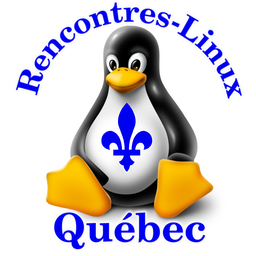

Rencontres Linux Québec
Liens officiels de la communauté.
Groupe Facebook
Page LinkedIn
Groupe LinkedIn
Chaîne YouTube
Discussion (FramaTeam, Mattermost)
Tous nos événements
Notre blogue
Journée portes ouvertes Linux 2026